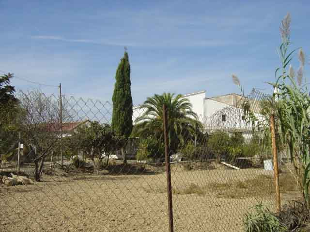
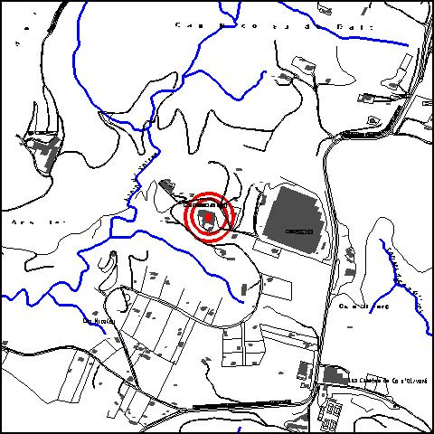

|  |  |
Nom de l’element: Can Nicolau de Dalt
Clau d’identificació: A.08
Nucli o indret: Barri de Can Nicolau de Dalt.
UTM: X= 413.618, Y= 4.595.333, 160 m snm.
Règim del sòl: sòl urbanitzable delimitat.
1.1. Època de construcció i tipologia:
Masia del 1878, segons una pedra situada a la porta d’entrada, i documentada ja al s.XVII. Els murs són de mamposteria i aglomerat de pedres. La coberta és de teula i les bigues de fusta. L’edifici, de planta baixa, és més o menys rectangular, amb una façana obliqua amb coberta a dues aigües. Té una estructura murària on predomina el ple sobre el buit. Té algunes portalades d’entrada amb arcs. S’hi ha realitzat múltiples intervencions. Antigament es dedicava al cultiu de la vinya. Presenta tres propietats: la primera, està situada a la part sud, on se n’han realitzat reformes interiors; la coberta està deteriorada. Està formada per un edifici principal i tres magatzems (una antiga quadra, un magatzem que es va cremar i un magatzem de cria d’animals que s’ha restaurat el seu sostre). La segona propietat està situada al nord i presenta, a part de l’edifici principal que s’ha reformat en l’interior, una antiga quadra i un magatzem agrícola. La tercera propietat està situada a l’oest i consta d’un edifici de vivenda i d’un magatzem. És la propietat que té la inscripció a la pedra de la porta d’entrada.
1.2. Estat de conservació:
En general és mitjà. La primera propietat presenta un estat dolent; la segona i tercera propietats presenten un estat bo de conservació. Les estructures portants, els forjats, les voltes, les cobertes, les façanes, el paviment i els acabats interiors es troben en un estat mitjà de conservació. Les obertures es troben en bon estat. Hi ha humitats.
1.3. Ús actual:
Residencial i petita superfície agrícola.
1.4. Accés:
Accés fàcil des del carrer d’accés a CARTISA.
Masia del 1878, formada per diferents edificis.
3.1. Usos admesos:
Plurihabitatge (màxim 3 habitatges), unihabitatge, residencial, hoteler (excepte aparthotel; i amb un màxim de 30 places), oficines i serveis, educatiu, recreatiu cultural i social, recreatiu de restauració, esportiu.
3.2. Condicions d’ordenació:
Segons Pla Parcial a redactar.
3.3. Accés i serveis:
Accés des del carrer d’accés a CARTISA.
BCIL (Bé Cultural d’Interes Local)